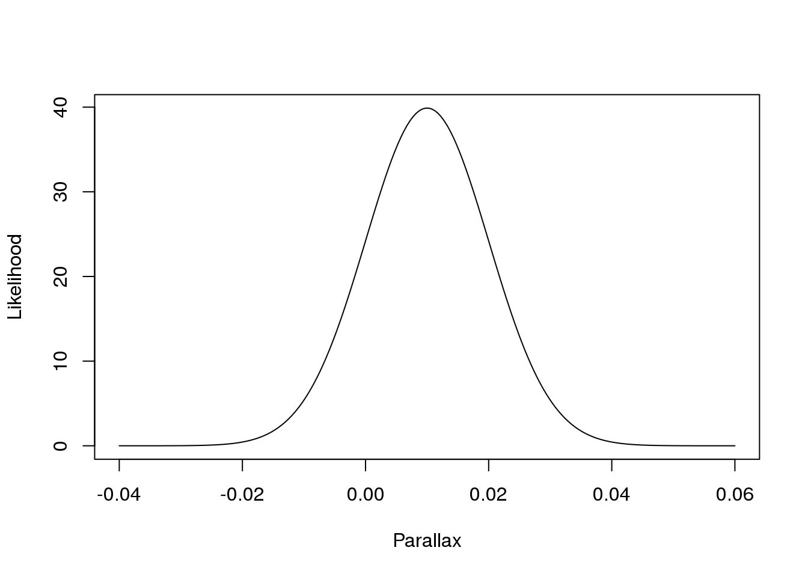
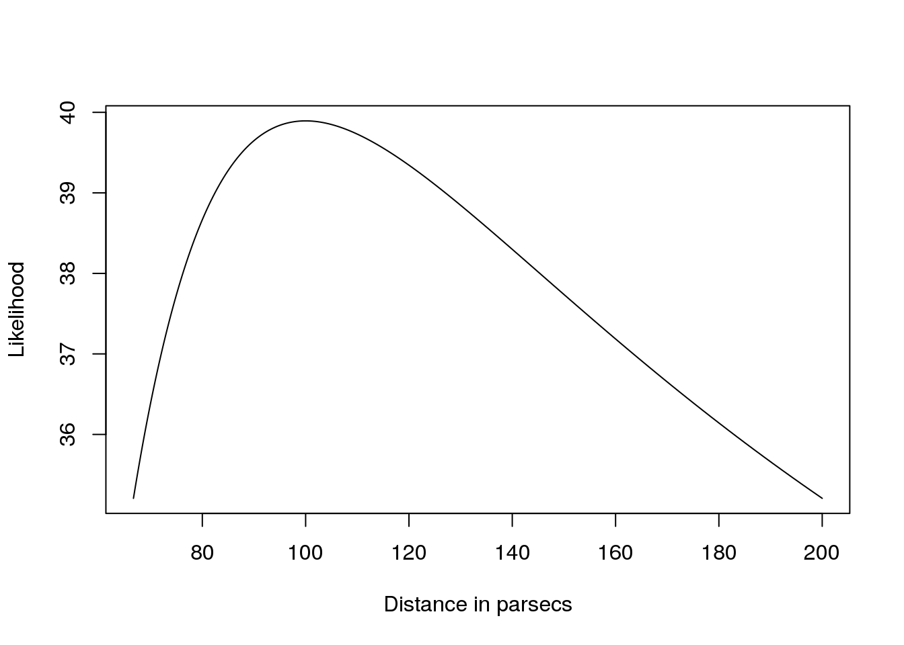
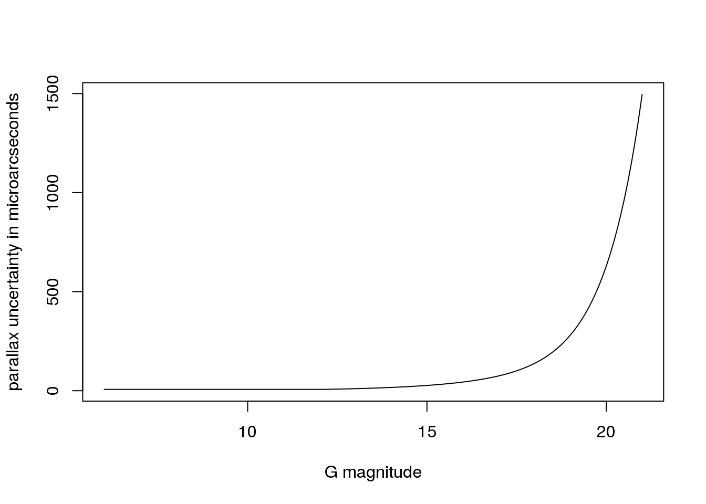
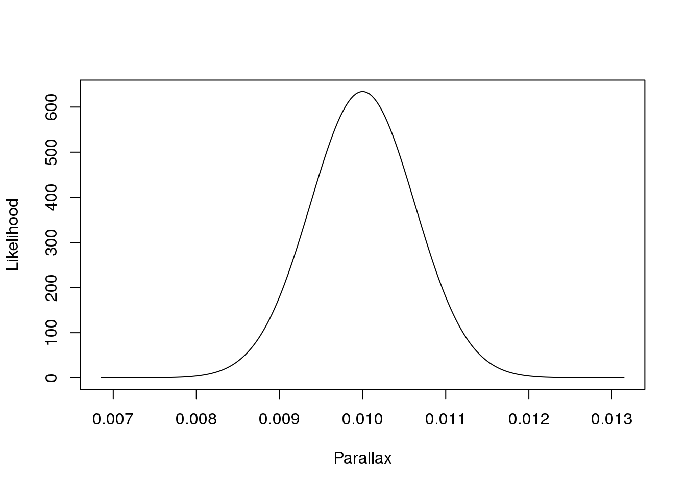
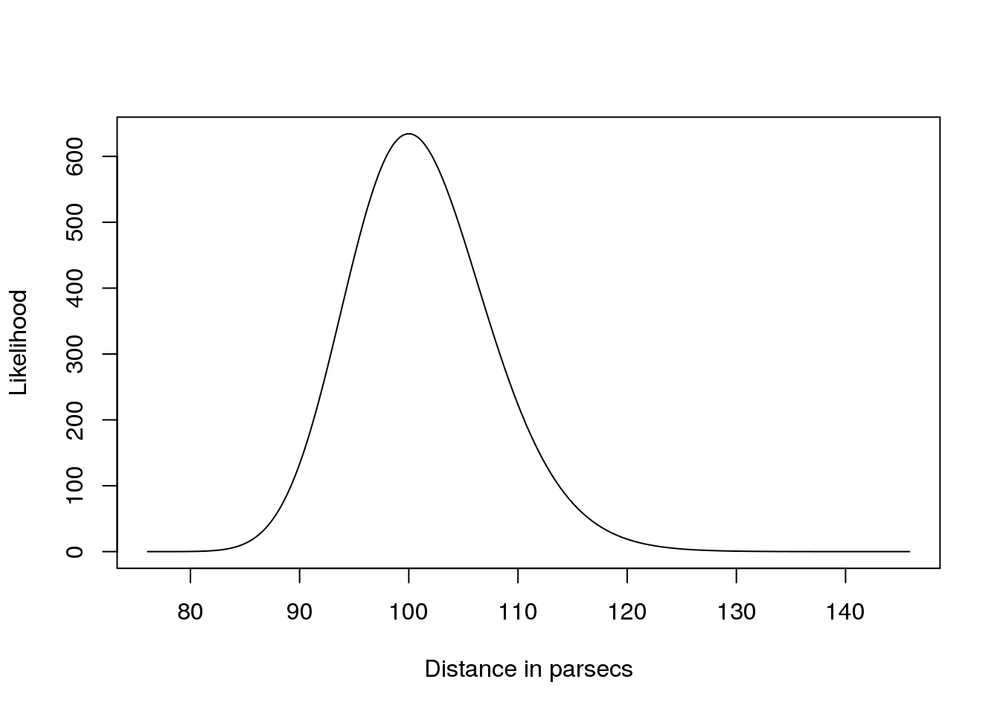
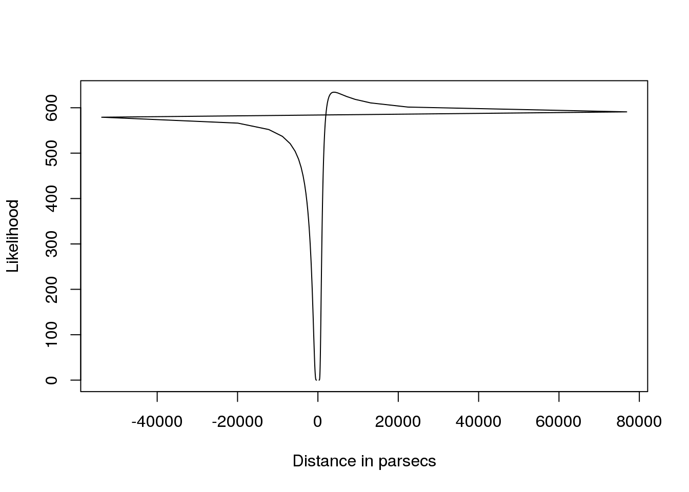
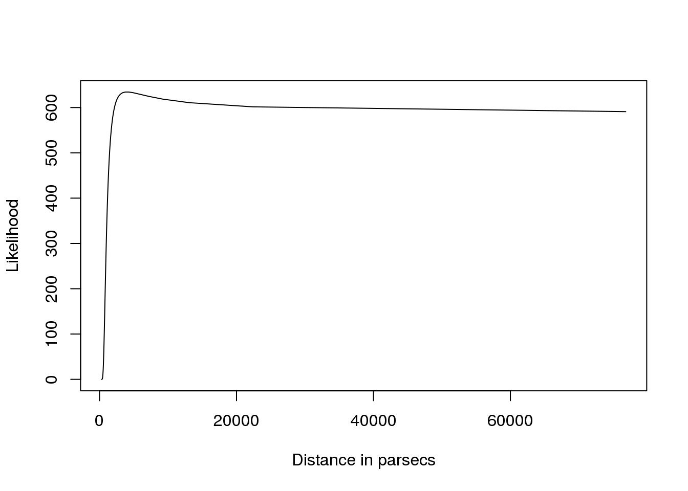
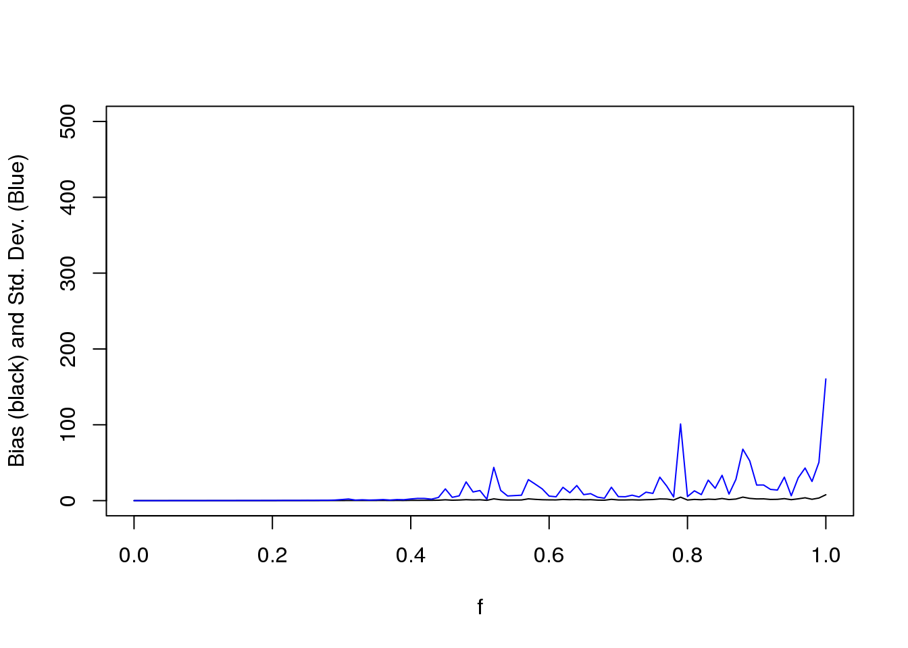
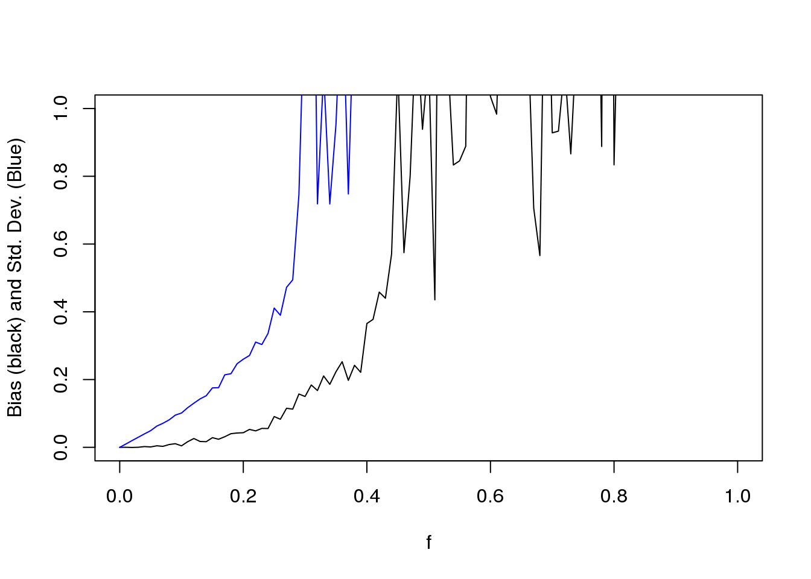
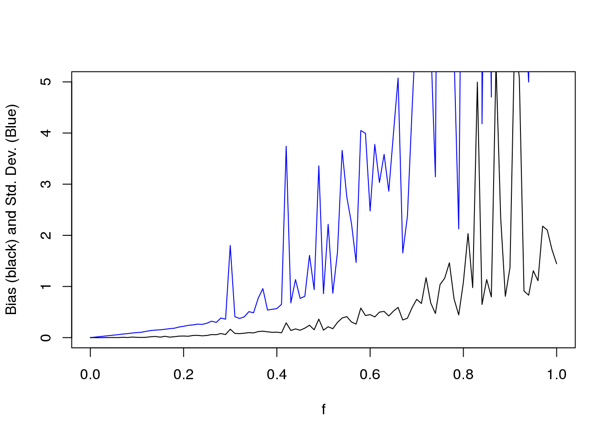

Bayesian Inference
The frequentist approach
The likelihood in Eq. (1) of Bailer-Jones (2015)

The parallax likelihood
I will later cite this as
\(p(\theta|\mathcal{D})\)
likelihood <- function(p,d,s_p)
{
if (s_p < 0) print("Error. Parallax uncertainties must be positive.")
const = 1.0/(sqrt(2.0*pi)*s_p)
XTSX = (1.0/(sqrt(2.0)*s_p))*(p-(1.0/d))
lik <- const*exp(-XTSX^2)
return(lik)
}OK. Let us do some examples
s_p <- 0.01 # Imagine we have 10 milliarcsecond uncertainties
d.true <- 100 # The distance measured in parsecs
p.true <- 1/d.true # in arcsecondsNow let us evaluate the likelihood for some potential values of the observed parallax
nr.values <- 200
values <- seq(p.true-5*s_p,p.true+5*s_p,length.out=nr.values)
tmp <- rep(NA,nr.values)
for (i in 1:length(values))
{
tmp[i] <- likelihood(values[i],d.true,s_p)
}
plot(values,tmp, ty="l", xlab="Parallax", ylab="Likelihood")
Is this normalized as a function of the measurement?
require(caTools)## Loading required package: caToolstrapz(values,tmp)## [1] 0.3829242Yes (to within numeric precision)
Now… is it normalized as a function of distance?
plot(1.0/values,tmp, ty="l", xlab="Distance in parsecs", ylab="Likelihood")
Please, play with the values of the uncertainty for a while.
What is the expected uncertainty for Gaia measurements? From GAIA ASTROMETRIC SCIENCE PERFORMANCE POST-LAUNCH PREDICTIONS by J.H.J. de Bruijne, K.L.J. Rygl and T. Antoja http://arxiv.org/pdf/1502.00791.pdf
Gaia_s_p <- function(VminusI,G)
{
z = apply(cbind(10^(0.4*(12.09-15)),10^(0.4*(G-15))), 1, max)
s_p = sqrt(-1.631+680.766*z+32.732*z^2)*(0.986+(1-0.986)*VminusI)
return(s_p)
}Let us plot the curve
G <- seq(6,21,0.1)
VminusI <- G/G
plot(G,Gaia_s_p(VminusI,G),ty="l",xlab="G magnitude", ylab="parallax uncertainty in microarcseconds")
Beware! it is in microarcseconds!
So, let us go to Example 1: a V-I colour index of 1 and G=20
VminusI <- 1.0
s_p <- Gaia_s_p(VminusI,20)/10.0^6 # To convert to arcseconds
d.true <- 100 # Measured in parsecs
p.true <- 1/d.true
nr.values <- 200
values <- seq(p.true-5*s_p,p.true+5*s_p,length.out=nr.values)
tmp <- rep(NA,nr.values)
for (i in 1:length(values))
{
tmp[i] <- likelihood(values[i],d.true,s_p)
}
plot(values,tmp, ty="l", xlab="Parallax", ylab="Likelihood")
require(caTools)
trapz(values,tmp)## [1] 0.9999994And now for the distance
plot(1.0/values,tmp, ty="l", xlab="Distance in parsecs", ylab="Likelihood")
Unfortunately, not everything is at a distance of 100 parsecs…
- Example II: same colour index, but at 4 kpc
VminusI <- 1.0
s_p <- Gaia_s_p(VminusI,20)/10.0^6 # To convert to arcseconds
d.true <- 4000 # Measured in parsecs
p.true <- 1/d.true
nr.values <- 200
values <- seq(p.true-5*s_p,p.true+5*s_p,length.out=nr.values)
tmp <- rep(NA,nr.values)
for (i in 1:length(values))
{
tmp[i] <- likelihood(values[i],d.true,s_p)
}
plot(values,tmp, ty="l", xlab="Parallax", ylab="Likelihood")
require(caTools)
trapz(values,tmp)## [1] 0.9999994plot(1.0/values,tmp, ty="l", xlab="Distance in parsecs", ylab="Likelihood")
filter <- (1.0/values > 0)
plot(1.0/values[filter],tmp[filter], ty="l", xlab="Distance in parsecs", ylab="Likelihood")
And basically, any distance beyond 4kp is likely.
Lessons learnt:
- The likelihood is a function of the data, it is a probability distribution for the data, not for the parameters.
- For Gaussian uncertainties in the parallax, the uncertainties in distance can be highly asymetric.
- The likelihood as a function of distance, is not a probability distribution and should not be interpreted as such.
- The usual Taylor expansion
\(d_{est}=1/\tilde\varpi\pm\frac{\sigma_{\varpi}{\tilde\varpi^2}}\)
is just wrong. Plain wrong. And you can get meaningless results if you quote confidence intervals in your work.
Bayesian inference
Here is Bayes Theorem
\[ p(\theta|\mathcal{D}) = \frac{p(\mathcal{D}|\theta)\cdot p(\theta)}{p(\mathcal{D})}\]
Let me define three priors. First, the improper uniform prior
prior.iu<-function(r)
{
return(1)
}Then, the uniform truncated prior
prior.u<-function(r,rlim)
{
if (r <= rlim) return(1/rlim) else return(0)
}And then define the posterior function
unnormalized.posterior <- function(prior,likelihood)
{
u_posterior <- prior*likelihood
return(u_posterior)
}And, in the philosophy of the paper, let us draw conclusions not from a single measurement, but from large samples of sources .In order to fix ideas, let us generate samples up to a maximum distance rlim=1000 parsecs
The case of the improper uniform prior is entirely equivalent to the frequentist approach that only considers the likelihood. This is highly unphysical, because it implies a stellar density decaying a \(r^{-\frac{1}{3}}\) with peak density at the Sun
For the truncated uniform prior R has simple functions to sample.
rlim=1000
true_r_sample <- runif(1000,0,rlim)
true_p_sample <- 1/true_r_sampleOK. Let us see how our inferences change with varying signal-to-noise ratio. We will define it as
\[f=\frac{\sigma_\varpi}{\varpi}\]
f <- seq(0,1,0.01) # This is sigma_p/p (see Bailer-Jones, 2015)Now, let us generate the observations by adding noise
measured_p_sample <- rep(NA, length(true_r_sample))
bias <- rep(NA,length(f))
sd <- rep(NA,length(f))
# Loop over signal to noise (actually noise-to-signal) ratios
for (j in 1:length(f)) # This f is sigma/p
{
s_p_sample <- f[j]*true_p_sample
# Create a realization of the noise for f
for (i in 1:length(true_p_sample)){
measured_p_sample[i] <- rnorm(1,true_p_sample[i],s_p_sample[i])
}
estimated_r_sample <- 1.0/measured_p_sample # For flat unbounded priors, there is no need to compute the posterior
filter <- measured_p_sample > 0
scaled_residuals <- (estimated_r_sample[filter]-true_r_sample[filter])/true_r_sample[filter]
bias[j] <- mean(scaled_residuals)
sd[j] <- sd(scaled_residuals)
}And let us plot it…
plot(f,bias,ty="l",ylim=c(0,500),ylab="Bias (black) and Std. Dev. (Blue)")
lines(f,sd,ty="l",ylim=c(0,500),col="blue")
plot(f,bias,ty="l",ylim=c(0,1),ylab="Bias (black) and Std. Dev. (Blue)")
lines(f,sd,ty="l",ylim=c(0,1),col="blue")
Try a second experiment using a truncated proper prior:
for (j in 1:length(f)) #
{
s_p_sample <- f[j]*true_p_sample
for (i in 1:length(true_p_sample)){
measured_p_sample[i] <- rnorm(1,true_p_sample[i],s_p_sample[i])
}
estimated_r_sample <- 1.0/measured_p_sample
estimated_r_sample[measured_p_sample <0 | estimated_r_sample > rlim] <- rlim
# Try this code block with the following line uncommented
# filter <- rep(TRUE,length(measured_p_sample))
scaled_residuals <- (estimated_r_sample[filter]-true_r_sample[filter])/true_r_sample[filter]
bias[j] <- mean(scaled_residuals)
sd[j] <- sd(scaled_residuals)
}
plot(f,bias,ty="l",ylim=c(0,5),ylab="Bias (black) and Std. Dev. (Blue)")
lines(f,sd,ty="l",ylim=c(0,5),col="blue")
Proposed experiment
- Generate a sample from a constant volume density
- Code a prior that represents constant density (Eq. 9 in Bailer-Jones, 15)
- Compute the (unnormalized) posterior and plot it for several choices of d, NSR and/or measured parallaxes
- Code the values of the mode of the posterior, and compute them for the sample. (Eqs. 16 in Bailer-Jones, 15)
- Plot the bias and variance
Hints
For prior probabilities different from the classical ones, we first have to define the cumulative distribution function of the prior. Take for example, the prior that corresponds to a uniform density:
\[ \frac{N(V)}{V} = const\]
if \[ {\rm d}V=4\pi r^2 {\rm d}r\]
Since the density of stars has to remain constant, we have that
\[\int_0^{r_{lim}} p(r){\rm d}r = 1\]
\[\int_0^{r_{lim}} N(r){\rm d}r = N_{tot}\]
so clearly
\[p(r)=\frac{N(r)}{N_{tot}}\]
\[ const = \frac{N_{tot}\cdot p(r)\cdot{\rm d}r}{4\pi r^2\cdot {\rm d}r}\]
so…
\[p(r)\propto r^{2}\]
and the CDF
\[P(R)= \int_0^{r=R} p(r)\cdot {\rm d}r\propto r^{3}\]
and the inverse function (from probabilities to radii) is
\[r \propto P(R)^\frac{1}{3}\]
icdf.const.dens <- function(P)
{
if(!exists("rlim") | is.na(rlim)) print("Error: maximum radius undefined")
r <- ((rlim^3)*P)^(1.0/3.0) # This is the prescription for a constant stellar volume density
return(r)
}gen.data <- function(n,icdf.spatial.dens)
{
x <- runif(n)
r <- icdf.spatial.dens(x)
return(r)
}
r_sample <- gen.data(1000,icdf.const.dens)Second exercise
- Generate a sample from an exponentially decreasing density (Eq. 17 in Bailer-Jones, 15; L=10^3)
- Code a prior that represents this exponentially decreasing density
- Compute the (unnormalized) posterior (Eq 18) and plot it for several choices of d, NSR and/or measured parallaxes
- Compute the roots of the posterior as in page 13-14 of Bailer-Jones, 2015.
- Plot the bias and variance
- Play with the value of L